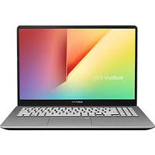
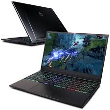

There are various kind of devices with are afforable and o quality that you can get at Wen Computers. moreover are things are less expensive. you're totally responsible. The gallery below provides you with the list of different computers. Once you have all essential things for your blog, it is time to register it online. Choose your domain name and register it at godaddy.com, and continue to WordPress where you can start your own page very easily. Once you started, you have to be ready to write it for yourself for the first few months. As the readers will not come straight away clearly. So I would recommend you to connect all your social media platforms and try to redirect audience to your website. It takes time, but eventually people will get to know it, and if they like it – they will come back The thing I would like to highlight again is a good computer, make sure to have a light one, that you can carry around with you. As blogging is a full time job, involving a lot of traveling and different locations. you never know where you will end up, so make sure that your computer is easy to use, powerful and light. Like Dell. They are known since 1986 and they specially empower countries, communities, customers and people everywhere to use technology to realize their dreams. They deliver technology solutions that help to do and achieve more, whether you are at home, work, school or anywhere in their world. I would highly recommend one of the XPS laptops.

